Sport
พันธมิตรฟุตบอลจากลาลีกา
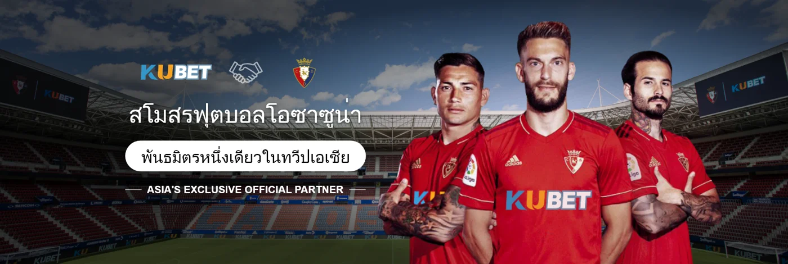
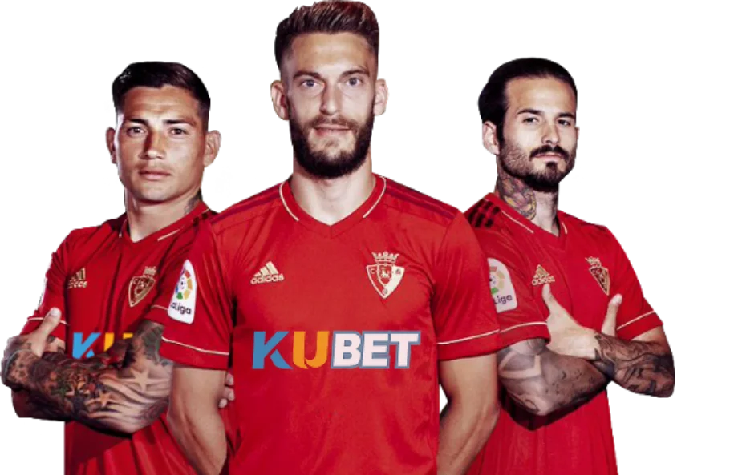
KUBET x CA Osasuna
รายละเอียดความร่วมมือ ภาพกิจกรรม และข้อมูลสโมสร
ภาพและวิดีโอกิจกรรม
แผนการร่วมงาน
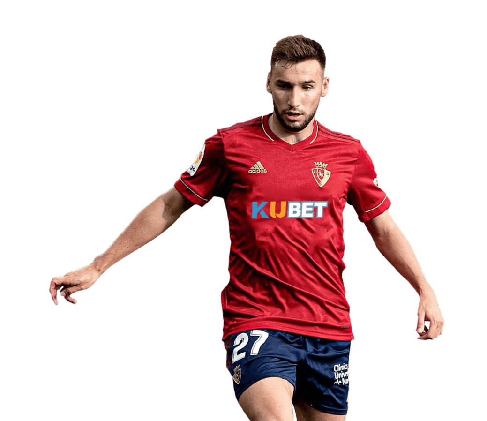
KUBET ได้บรรลุข้อตกลงความร่วมมือกับสโมสรฟุตบอลโอซาซูน่าแห่ง“ศึกลาลีกาสเปน”ในเดือนพฤษภาคม ปี 2022 โดยได้กลายเป็นพันธมิตรอย่างเป็นทางการประจำภูมิภาคเอเชียของสโมสรโอซาซูน่า
การร่วมงานกันครั้งนี้ ทำให้โลโก้ของบริษัทจะปรากฏบนการแข่งขันและบนแพลตฟอร์มโซเชียลมีเดียของสโมสรซีเอ โอซาซูน่า นอกจากนี้ ทางบริษัทมีสิทธิ์ในการเผยแพร่โฆษณาเสมือนจริงของสโมสรซีเอ โอซาซูน่า ท่านสามารถเห็นโฆษณาของ KUBET ได้เมื่อมีการแข่งขันที่สนามเหย้าของสโมสรซีเอ โอซาซูน่า ให้ KUBET กับ ซีเอ โอซาซูน่าได้ร่วมต่อสู้เคียงข้างคุณ เพื่อไปให้ถึงจุดสูงสุดอีกครั้ง
“ซีเอ โอซาซูน่า”เป็นสโมสรฟุตบอลที่มีประวัติยาวนาน ขึ้นชื่อเรื่องรูปแบบการเล่นที่แข็งแกร่ง เน้นการเล่นเกมรับ ซึ่งค่อนข้างหายากในลีกลาลีกาของสเปน เป็นเอกลักษณ์เฉพาะของสโมสรจากภาคเหนือ ในบรรดาสโมสรฟุตบอลทั้งหมดที่แข่งขันในลีกลาลีกาของสเปนนั้น สโมสรซีเอ โอซาซูน่ามักจะทำให้แฟนบอลเซอร์ไพรส์ได้อยู่ตลอด
ผลงานสโมสร
1 สมัย
ยูฟ่ายูโรปาลีก รอบ4ทีมสุดท้าย
4 สมัย
แชมป์เซกุนดาดิบิซิออน
7 สมัย
แชมป์เตร์เซรา ดีบีซีออน
2 สมัย
รองแชมป์โกปาเดลเรย์
22 สมัย
แชมป์แคว้นนาบาร์ราคัพ
2 สมัย
แชมป์การแข่งขันการกุศล แมนดี้ สปอร์ต ไทรแองเกิล
โปรแกรมการแข่งขัน
ข้อมูลตามหน้าแนะนำ KUBET ณ 3 ตุลาคม 2026
โปรแกรมการแข่งขันสนามเหย้า · 19 นัด
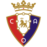
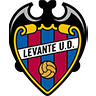
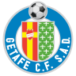
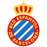
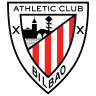
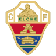
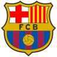
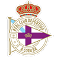
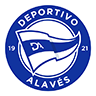
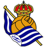
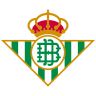
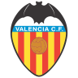
โปรแกรมการแข่งขันสนามเยือน · 19 นัด
※ ตารางการแข่งขัน(GMT+8)นี้มีไว้สำหรับพิจารณาเท่านั้น สุดท้ายแล้ววันที่แข่งขันจะอิงตามการแข่งขันที่เปิดในวันนั้นเป็นหลัก
ช่องทางของสโมสร
ข้อมูลและภาพความร่วมมือจาก KUBET
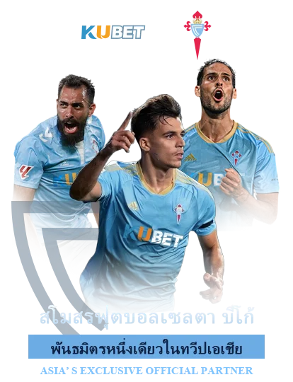
KUBET x Celta Vigo
แผนการร่วมงานและข้อมูลสโมสร
ในเดือนพฤษภาคมปี 2025 KUBET ได้บรรลุข้อตกลงความร่วมมือกับสโมสรฟุตบอลเซลตา บีโก้ในลีกฟุตบอลลาลีกาของสเปน และได้รับการแต่งตั้งให้เป็นพันธมิตรทางการในภูมิภาคเอเชีย
ผ่านความร่วมมือครั้งนี้ โลโก้แบรนด์ของเราจะปรากฏในเกมการแข่งขันและบนแพลตฟอร์มโซเชียลมีเดียของสโมสรเซลตา บีโก้ นอกจากนี้ เรายังได้รับสิทธิ์ในการโฆษณาเสมือนบนสโมสรเซลตา บีโก้ ซึ่งคุณจะได้เห็นโฆษณาของ KUBET ที่สนามเหย้าของสโมสรเซลตา บีโก้ มาร่วมกันเปิดบทใหม่ของความรุ่งเรืองไปด้วยกัน
เซลตา บีโก้ เป็นทีมฟุตบอลเก่าแก่ของสเปนที่ก่อตั้งในปี 1923 ทีมนี้มีสไตล์การเล่นที่ละเอียดและยืดหยุ่น โดดเด่นด้วยการครองบอลที่ไหลลื่นและการสวนกลับที่รวดเร็ว สนามเหย้าของทีมคือสนามบาเลโดส ซึ่งมีบรรยากาศที่คึกคักและได้รับการสนับสนุนจากแฟนบอลที่ภักดี เซลตา บีโก้มีผลงานที่มั่นคงในลาลีกามาโดยตลอด โดยทีมมีสไตล์การเล่นที่เต็มไปด้วยพลังและความคิดสร้างสรรค์ เป็นหนึ่งในทีมที่ได้รับความเคารพในลาลีกา
KUBET x Sevilla
แผนการร่วมงานและข้อมูลสโมสร
KUBET ได้บรรลุข้อตกลงความร่วมมือกับสโมสรฟุตบอลเซบีย่าแห่ง“ศึกลาลีกาสเปน”ในเดือนพฤษภาคม ปี 2023 โดยกลายเป็นพันธมิตรอย่างเป็นทางการประจำภูมิภาคเอเชียของสโมสรเซบีย่าในฤดูกาลที่ 2023–2025
การร่วมงานกันครั้งนี้ ทำให้โลโก้ของบริษัทจะปรากฏบนการแข่งขันของสโมสรฟุตบอลเซบีย่า และบนแพลตฟอร์มโซเชียลมีเดีย นอกจากนี้ ทางบริษัทมีสิทธิ์ในการเผยแพร่โฆษณาเสมือนจริงของสโมสรเซบีย่า ท่านสามารถเห็นโฆษณาของ KUBET ได้ตอนการแข่งขันสนามเหย้าของสโมสรเซบีย่า ให้ KUBET กับเซบีย่าได้ร่วมต่อสู้เคียงข้างคุณ เพื่อไปให้ถึงจุดสูงสุดอีกครั้ง
สโมสรฟุตบอลเซบีย่า เป็นสโมสรฟุตบอลที่เก่าแก่ที่สุดในสเปน ก่อนที่ประเทศสเปนจะมีการแข่งขันฟุตบอลแบบรวมทั้งประเทศนั้น เซบีย่าเคยได้แชมป์อันดาลูเซีย แชมเปียนชิพถึง 18 สมัย และยังได้แชมป์รายการแข่งขันของเมืองเซบีย่า 2 สมัย หลังจากก่อตั้งลีกลาลีกา สเปนแล้ว ก็กลายเป็นยุครุ่งเรืองของเซบีย่า โดยสามารถคว้าแชมป์ลาลีกา สเปน ได้ 1 สมัย และรองแชมป์ลาลีกา สเปน อีก 4 สมัย
ประวัติที่ผ่านมา เซบีย่าเคยได้แชมป์ลาลีกา สเปน 1 สมัย แชมป์โกปาเดลเรย์ 5 สมัย แชมป์สแปนิชซูเปอร์คัพ 1 สมัย แชมป์ยูฟ่ายูโรปาลีก 7 สมัยและแชมป์ยูฟ่าซูเปอร์คัพ 1 สมัย
1 สมัย
แชมป์ลาลีกา สเปน
5 สมัย
แชมป์โกปาเดลเรย์
1 สมัย
แชมป์สแปนิชซูเปอร์คัพ
1 สมัย
แชมป์ยูฟ่าซูเปอร์คัพ
7 สมัย
แชมป์ยูฟ่ายูโรปาลีก
18 สมัย
แชมป์อันดาลูเซีย แชมเปียนชิพ
ภาพโปรโมทความร่วมมือ 2023–2026
เรียงฤดูกาลล่าสุดก่อน · ภาพประวัติความร่วมมือตามข้อมูล KUBET
2026 · ฤดูกาล 2025–2026
2025 · ฤดูกาล 2024–2025
2024 · ฤดูกาล 2023–2024
2023 · ฤดูกาล 2022–2023
⚽ กีฬา
KUSABAAICMDPANDASBO▣ คาสิโนสด
KUCHOICEWMDGALLBETSASEXYDBPPVIAMGGClubBG🎰 สล็อต
3DBNGCQ9DSPGPG1JOKERFCDBPPMGJILIYGG◉ หวย
KUBBIN🎮 อีสปอร์ต
E-SPORTS BULLTF E-SPORTSSABADB◆ เกมยิงปลา
3DCQ9DSKSCHOICEDB♣ ดวลไพ่
3DMPDB♞ ไก่ชน
SV388GA28